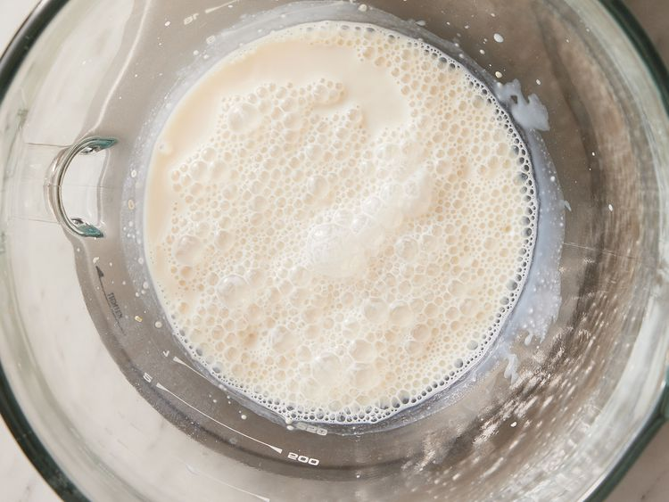
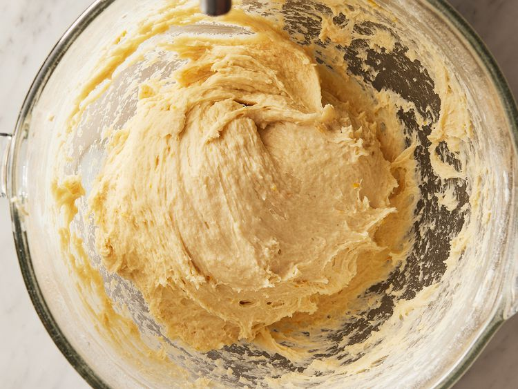
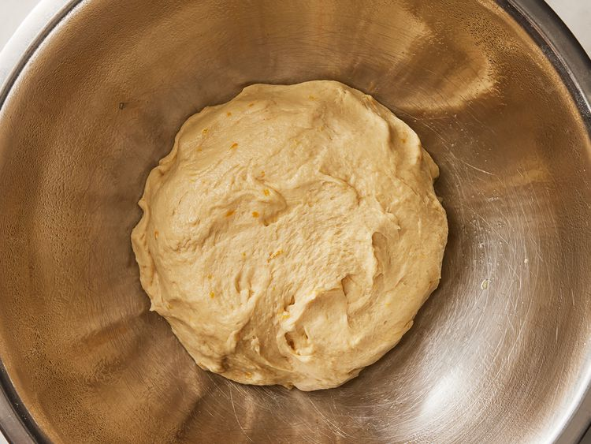
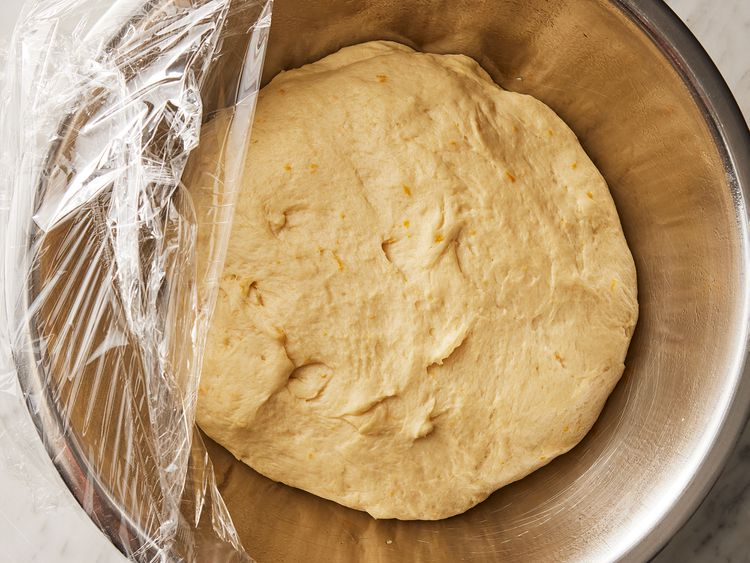
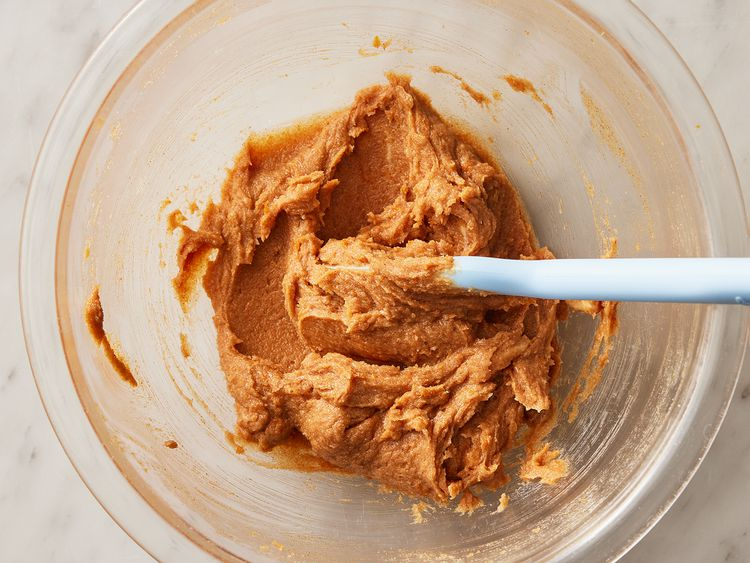
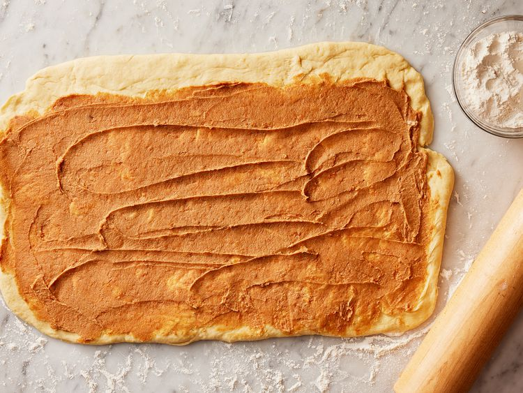
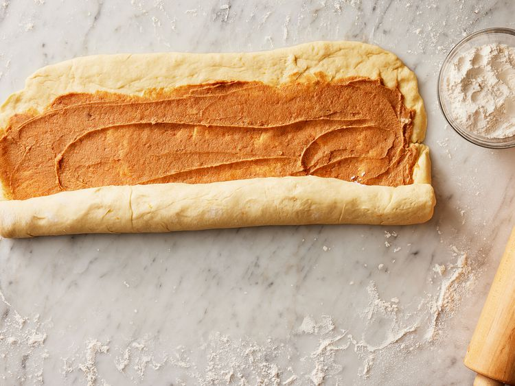
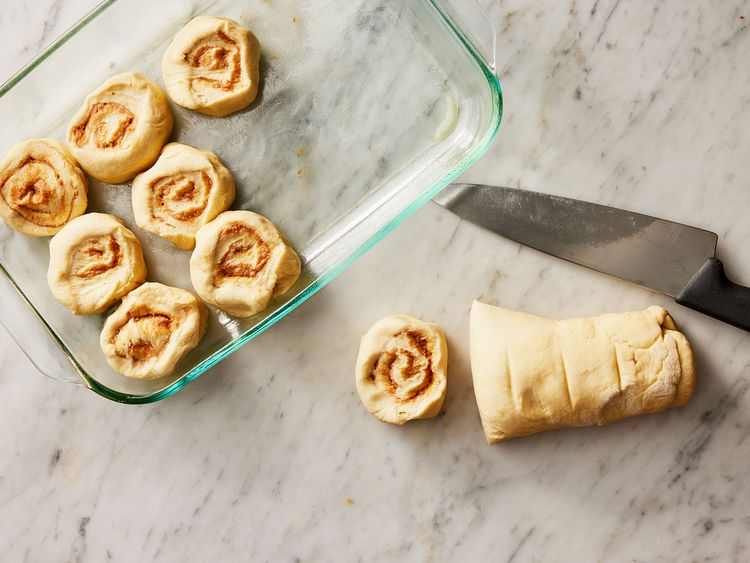
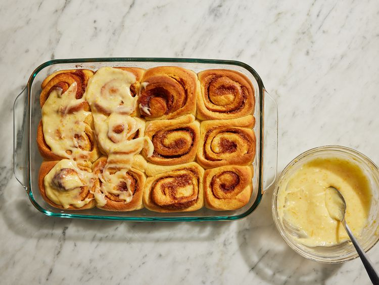

Orange Cinnamon Rolls
These orange cinnamon rolls are fluffy, soft, and sweet. Covered in a sticky orange cream cheese glaze, they are an amazing breakfast or brunch treat that make your entire house smell incredible!
Ingredients
Dough
- 3/4 cup warm whole milk (110 degrees F (43 degrees C))
- 1 (.25 ouce) package active dry yeast
- 1 large egg, room temperature
- 1 large egg yolk, room temperate
- 1/2 cup unsalted butter, softened
- 2 tablespoons honey
- 1 1/2 teaspoons freshly grated orange zest
- 1/4 cup freshly squeezed orange juice
- 3 1/2 cups all-purpose flour, divided, or more as needed
- 1 1/2 teaspoons kosher salt
- cooking spray
Filling
- 1/2 cup unsalted butter, softened
- 1/2 cup light brown sugar
- 2 teaspoons ground cinnamon
- 1 1/2 teaspoons freshly grated orange zest
Frosting
- 4 ounces cream cheese, softened
- 1 cup powdered sugar
- 1 tablespoon freshly grated orange zest
- 1 tablespoon freshly squeezed orange juice
- 1/4 teaspoon kosher salt
Directions
Step 1
- Pour warmed milk into the bowl of a stand mixer fitted with a paddle attachment for the dough. Sprinkle yeast evenly over the surface of the milk. Let stand until foamy, 5 to 10 minutes.

Step 2
- Add egg and egg yolk, butter, honey, orange zest, and orange juice to the yeast mixture. Beat on low until combined, about 45 seconds. Add 2 cups flour; beat on low until a wet dough forms, about 1 minute. Turn off mixer; switch to the dough hook attachment. Add 1 ½ cups flour and salt, beat on medium until dough is soft and elastic, 7 to 10 minutes. If necessary, add an additional ½ cup flour, tablespoon by tablespoon, using as little as possible to achieve a soft dough. The dough should be quite sticky.

Step 3
- Gather dough into a ball and transfer to a large greased bowl. Cover with plastic wrap and set aside to rise at room temperature until doubled in size, about 1 hour.


Step 4
- To make the filling: Combine butter, brown sugar, cinnamon, and orange zest in a bowl. Mix with a spatula until smooth and creamy, about 1 minute. Set aside.

Step 5
- Grease a 13x9-inch baking dish; set aside. Punch down the dough and transfer to a well-floured surface. Roll dough into a large 10x18-inch rectangle. Spread the filling over the surface of the dough, leaving a ½ inch border along the top long edge.

Step 6
- Roll the dough away from you to create a log, and pinch seam to seal.

Step 7
- Cut dough log into 12 equal rolls (about 1 ½ inches wide). Transfer rolls to prepared baking dish. Loosely cover with plastic wrap, and set aside to rise at room temperature until puffy and almost doubled in size, 30 to 45 minutes.

Step 8
- Preheat the oven to 375 degrees F (190 degrees C).
Step 9
- Bake rolls in the preheated oven until golden brown, 22 to 25 minutes.
Step 10
- While rolls are baking, prepare the frosting. Combine cream cheese, powdered sugar, orange zest, orange zest, and salt in the bowl of a stand mixer fitted with the paddle attachment. Beat at medium-high speed until very smooth and creamy, 2 to 3 minutes.
Step 11
- Remove rolls from oven and transfer to a wire rack. Let cool 2 minutes, then spread frosting evenly over the rolls. Serve warm.
